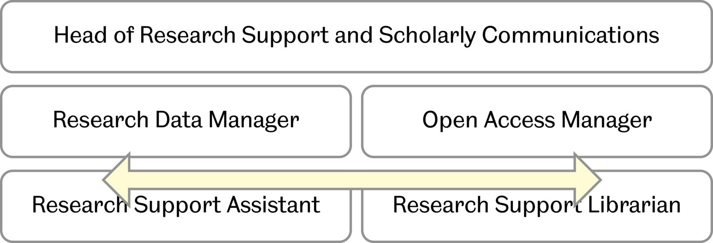

Jez Cope, University of Sheffield

What we expect of researchers
Required for all funded projects (TUoS policy)
Also for all RCUK funding and most charities
Starting point: DMPonline
Develop and support ORDA (Online Research Data)
Review and feed back on data management plans
Provide training & guidance
Facilitate RDM research groups, institutes, departments and faculties
Encourage local-level processes & services where sensible
Monitoring and raising awareness of compliance needs
University-wide ORDA rollout
EPSRC compliance stock-take
Integrating local RDM systems: Insigneo
Faculty-level guidance: DMPonline in MDH
RDM 101 online module with White Rose libraries
Digital Preservation: Rosetta ↔ figshare integration
Harvest metadata from external repositories
Identify and fill gaps in infrastructure
Data special collections
Software & Data Carpentry training
Adopt and scale local data management systems
Visualisation
Your ideas here…